О бренде
Вумен момент — информационная система, продвигающая идеи феминизма среди всех, кто в этом заинтересован. Мы говорим о феминизме, охватывая все его течения и все аспекты, рассказывая людям правду о борьбе женщин за права.
Миссия
Мы верим, что помогаем бороться за права женщин путём просвещения людей в вопросах феминизма.
Мы — образовательная платформа
Мы инклюзивны и толерантны
Мы всегда помогаем разобраться с трудностями
Мы нейтральны
Мы за формирование активной феминистической позиции
Характер
добрый
уверенный
эрудированный
спокойный
безопасный
общительный
феминный
стабильный
инклюзивный
Логотип
Логотип состоит из сочетания двух шрифтов: Bodoni и Helvetica

Использование логотипа
Самый маленький размер логотипа — 140x35 px, и увеличиваться он может вплоть до крайне крупных размеров, например, для больших носителей.

Охранная зона
Можно использовать поверх фото
Формы
В графике используются абстрактные плавные формы, подобные тем, что представлены ниже. Все они разные и «обнимаются», повторяя контуры друг друга.
Они могут быть на расстоянии

А могут пересекаться
Они могут быть окрашены в фирменные цвета, либо нарисованы контуром фирменного цвета. В фигуры могут быть вписаны фотографии. Все вместе они образуют паттерны. Примеры использования:
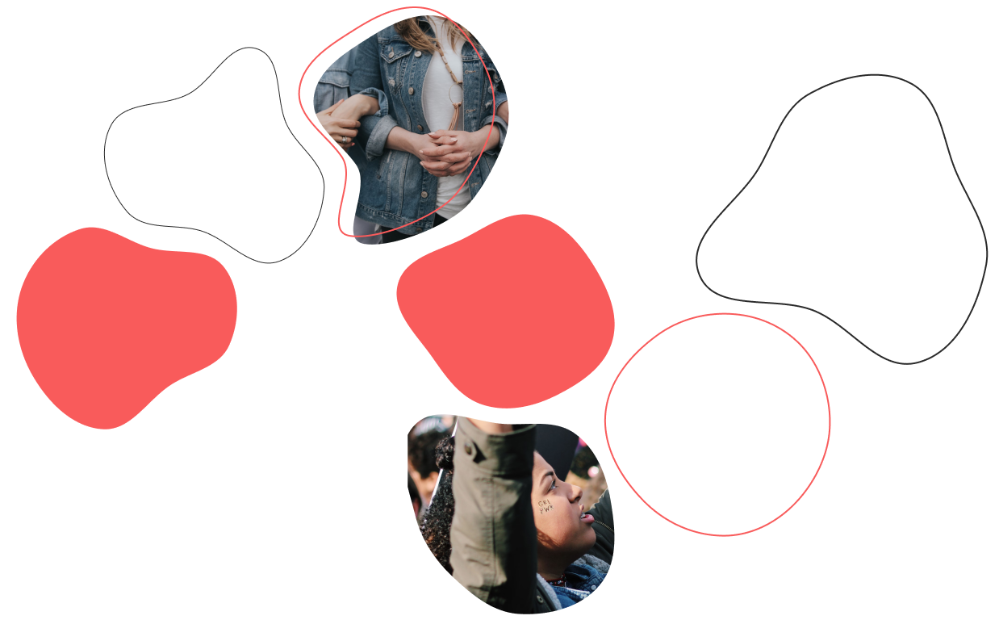Паттерн работает как в крупном, так и в мелком масштабе.
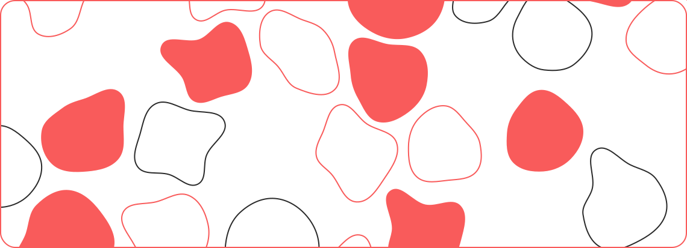Также в дизайне используются виджеты и бабблы со скруглёнными краями:

Фирменные цвета
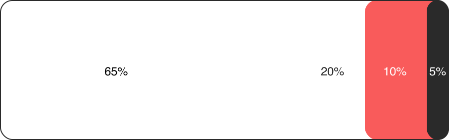Фотографии
Используются фотографии на темы феминизма в спокойной обработке. Содержание не сильно кричащее, скорее что-то более спокойное. Примеры:

 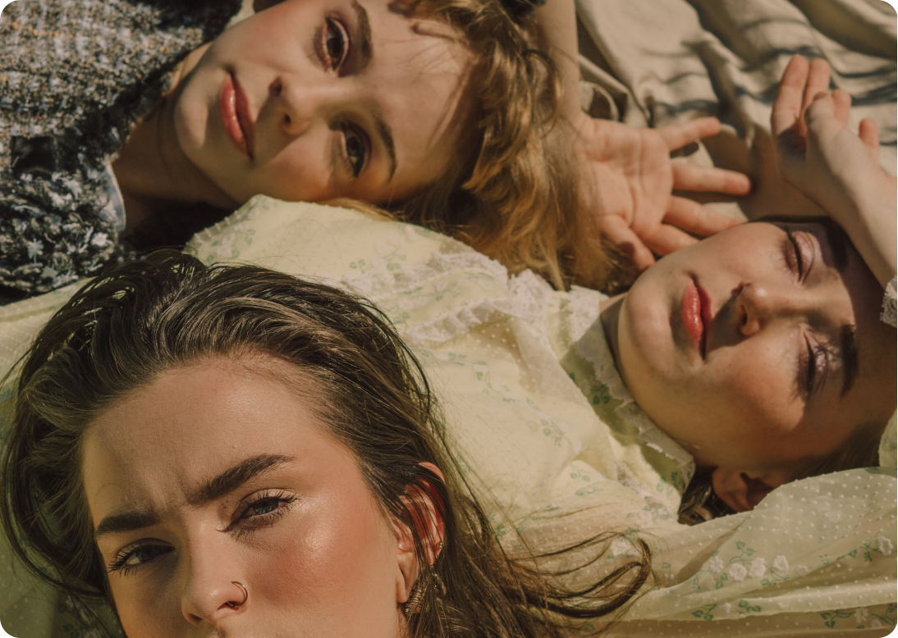
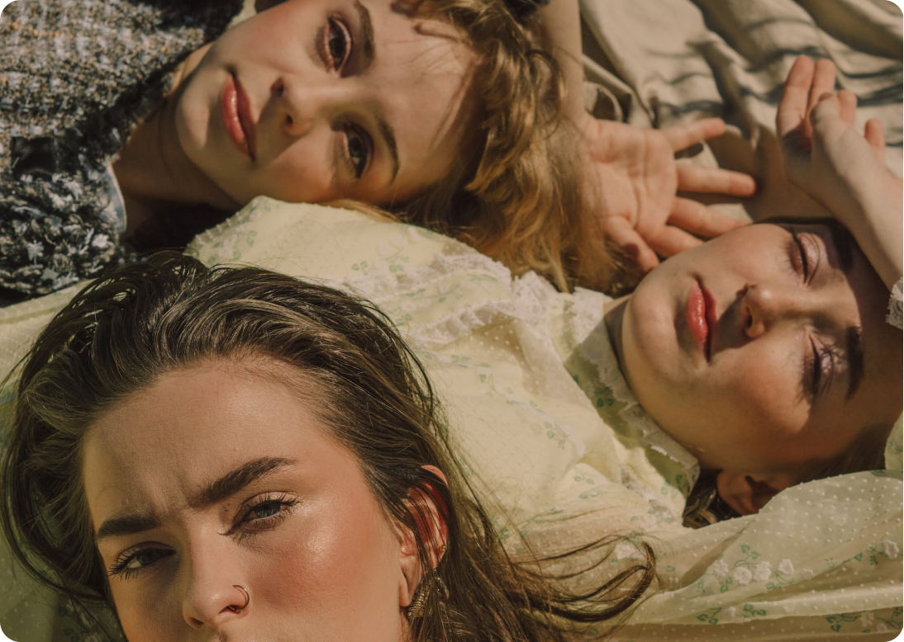
 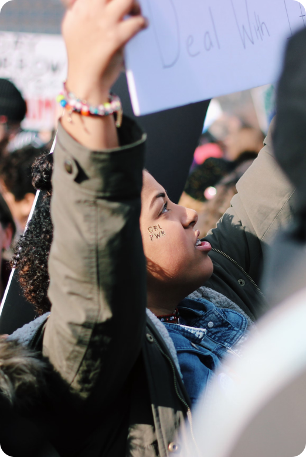
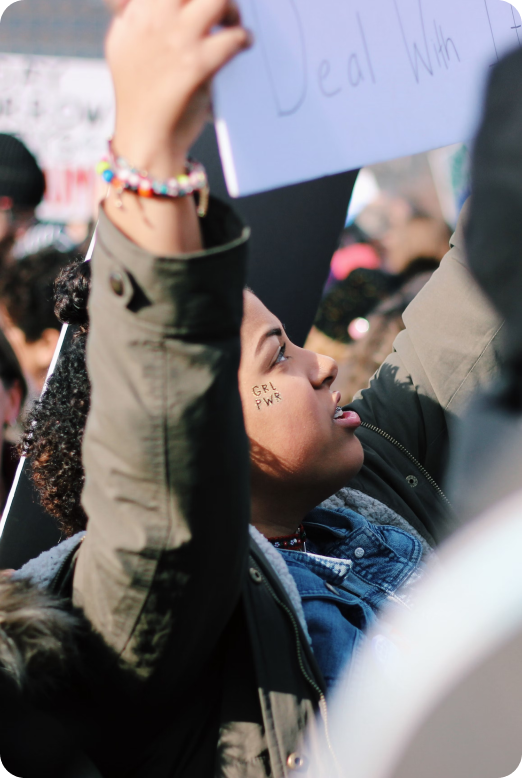

 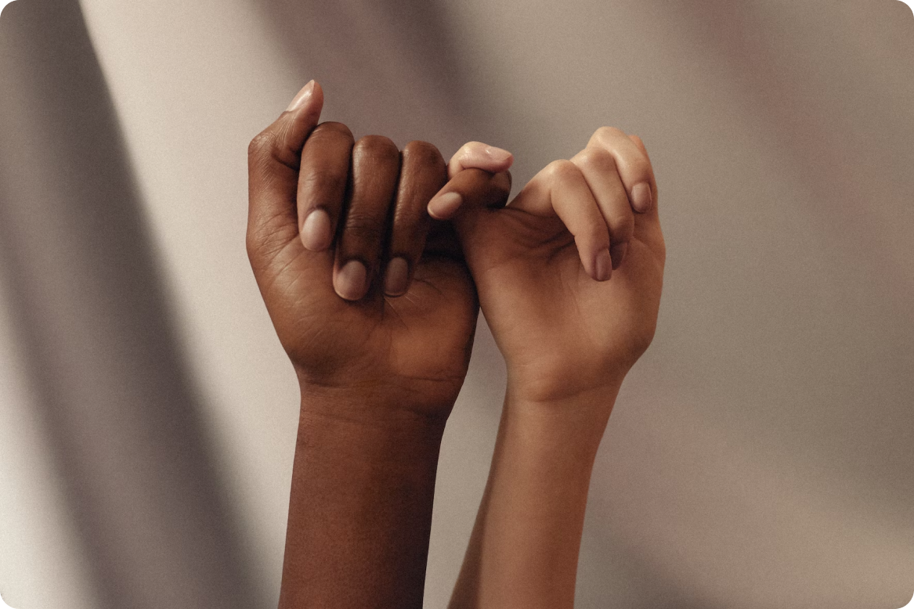
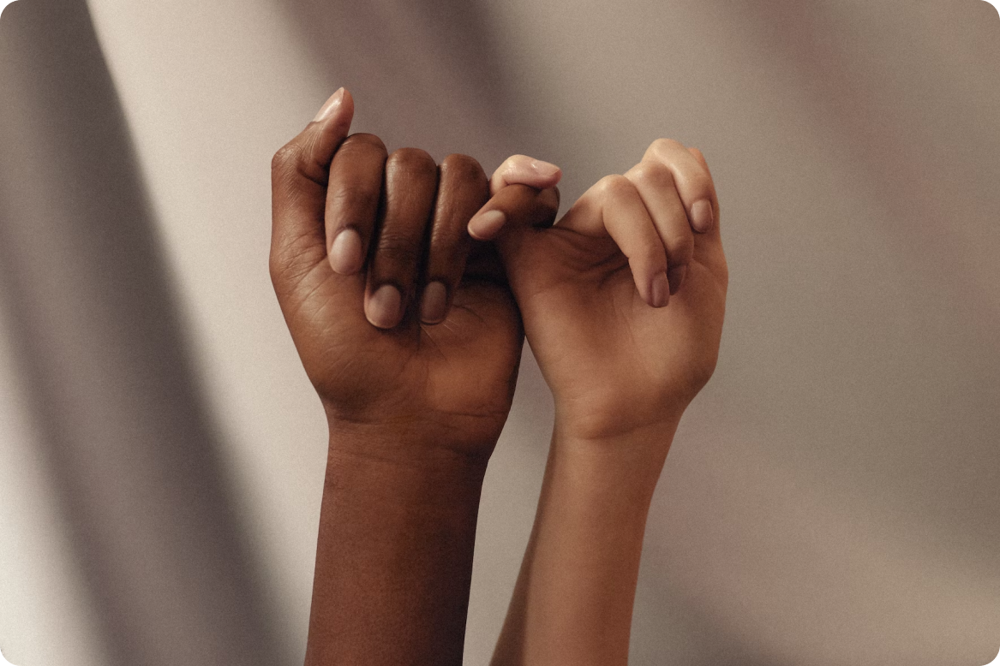
Типографика
Для заголовков и акцентов используется Bodoni, для основного текста Helvetica
H1
Вумен момент
H2
Мы говорим о женщинах
p
У нас есть много интересных статей
В основе композиции выравнивание по левому краю, но некоторые блоки могут иметь центральную выключку.
Некоторые
блоки
можно
писать
сочетанием
шрифтов,
чтобы
сделать
акцент
на информации
Композиция
Изображения с неровными краями и абстрактные формы не встают в чёткую сетку.
Нет пересечений
Типографика не должна пересекаться с изображениями, обязательно должен быть небольшой отступ.
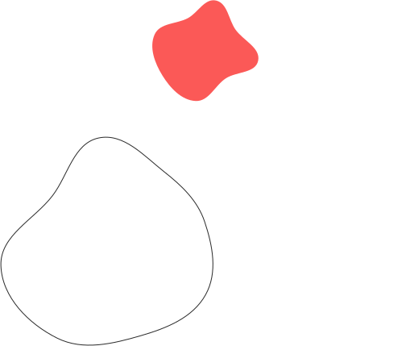Используется сетка, состоящая из 12 колонок.

Носители


 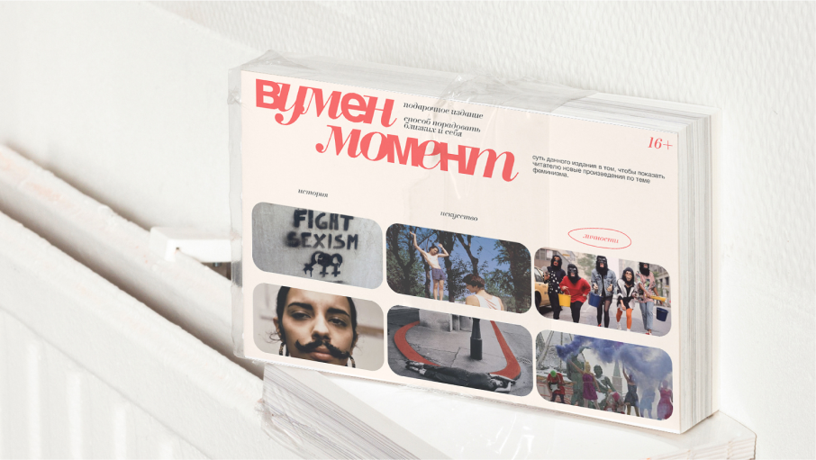
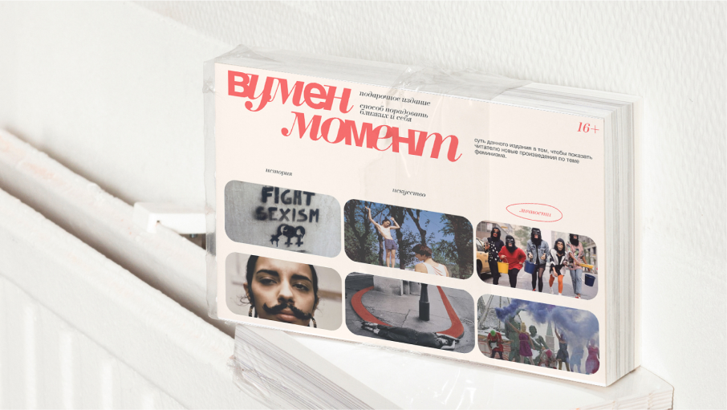